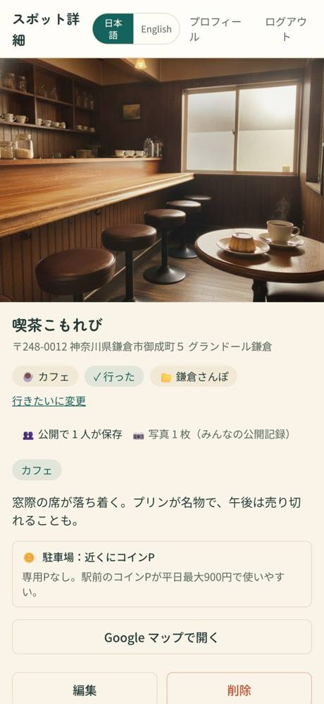
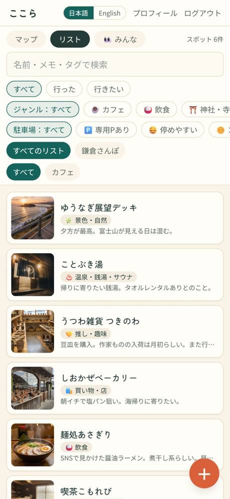
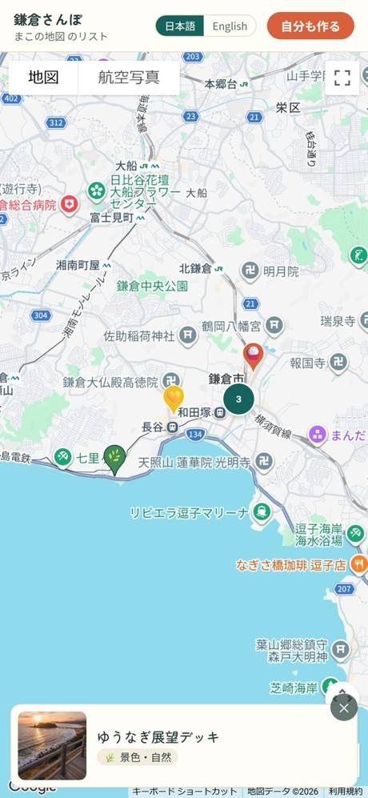

星も口コミもない。あなたの「ここら辺、いいんだよね」を写真とメモで残していく地図アプリ。誰かの点数じゃなく、自分の記憶で場所を選び直せる。
You know this feeling
気に入ったはずなのに、たどり着けない。誰にでもある、あの感じ。
SNSで見つけた良さげなお店。いいねは押した。でも、いざ探すと出てこない。
Googleマップの保存が増えすぎて、どれがどれだか分からない。
スクショフォルダが店の写真だらけ。結局、見返さない。
旅行先で「行きたい」と思ったのに、着いたら忘れてる。
残す場所をひとつに
What kokora does
カフェでも、神社でも、温泉宿でも、パン屋でも。ジャンルは自由。あなたの地図が、少しずつ育っていく。
RECORD
地図をタップするか、店名で検索して登録。写真とメモを添えれば、「なぜ良かったか」まで残る。行った／行きたいも、ワンタップで切り替え。

ORGANIZE
「カフェ」「御朱印」「サウナ」——タグは自由入力。あなたの分類が、そのまま地図の索引になる。地図でもリストでも見返せる。

SHARE
初期設定は非公開。公開に切り替えた場所だけ、専用リンクで人に見せられる。「まこの地図」を渡して、相手も自分の地図を作りはじめる。

The killer feature
集めた場所を選ぶだけ。徒歩・自転車・車、周回か片道を選べば、いちばん短いルートを自動で組む。そのまま Google マップでナビ開始。当日、迷わない。
Why kokora
星も 口コミも ない
残るのは 自分のための写真とメモだけ
誰かの点数で決めるのではなく、自分の記憶で場所を選び直せる地図。だから、あなたにとってだけ意味のある一枚が育っていく。
無料。iOSはApp Storeから、Android・PCはブラウザからそのまま。
アカウント登録は Google またはメールアドレスで。Android版は準備中です。